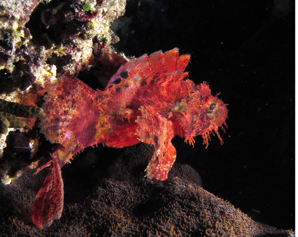
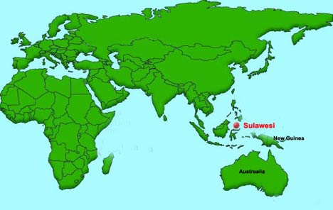
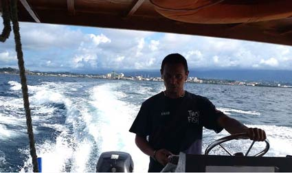
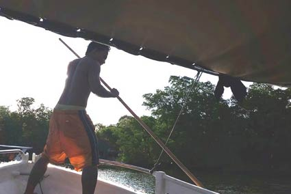
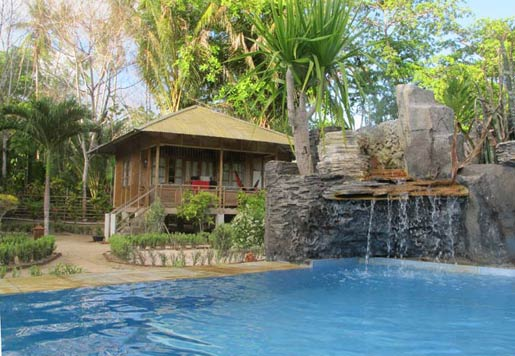
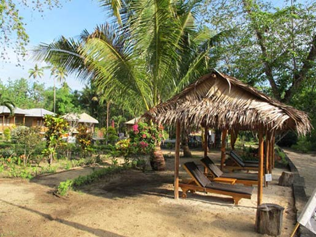
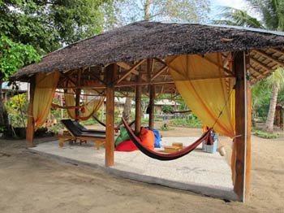
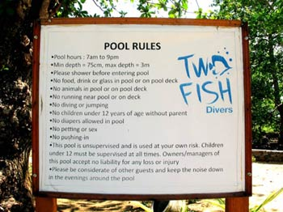
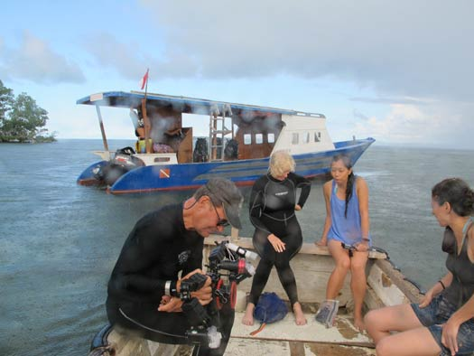

TWO FISH RESORT Bunaken Island, Manado City, North Sulawesi, Indonesia - November 2015


The island of Bunaken is situated at the northern tip of the island of Sulawesi, Indonesia. It is roughly 3 square miles in area and is part of the Bunaken National Marine Park. Bunaken is reached from Manado by motorized boat, departing from Manado Harbor. This lovely area offers about 20 dive sites characterized by steep walls marked with deep crevices, sea fans and giant sponges..
Getting to Bunaken from the USA is not an easy process, but it is worth the effort. We spent two weeks muck diving in Lembeh and then headed to Two Fish Dive Resort in Bunaken for a four-day stay. A motorized boat cannot access the shallow shoreline waters surrounding Two Fish Resort, so the transport and dive boats are moored in deeper water and passengers are transferred to a small boat, propelled by staff members using long poles.




The single drawback was a significant one for us. The Cabanas did not have air conditioning. We were aware of this before booking the trip, but thought we could manage hot conditions for the 4-day stay. We were wrong!
Two Fish Resort is a gorgeous spot with well-groomed gardens, peaceful resting spots, and a large pool warmed by the sunshine. The cabanas were spacious and offered ample storage and camera set-up space. Diving and non-diving guests would find the setting to encourage a sense of peace and sheer relaxation.



The dive gear-up/clean-up area was adequate, providing benches, separate rinse tanks for equipment, wetsuits, and cameras. It was a large enough area that folks could move about without bumping into one another. Drying racks were located in the sunshine and breeze, so gear dried between dives. An abundance of dive resource books were available for creature identification.
Walking gear from the shallow waters to the punk boat and loading, first that boat, then 'pole-pushing' to the dive boat and re-loading was cumbersome in wetsuits and heat. Dive sites were relatively nearby, and offered beautiful walls with healthy corals. This was a delightful change from the previous two weeks of muck diving. Don't get me wrong: we love the muck diving of Lembeh. But switching to diving coral walls was lovely. The biggest drawback to the dive operation, in my opinion, was the level of experience or training of the dive guides. They were all very friendly, but the guides that we had seemed to view their job as just providing accompaniment on the dive. They dove with us, but did not seek out critters or identify critters, or offer other assistance to make the dives exceptional. Similarly, they didn't always wait for divers to board the boat after a dive, in order to help them with fin/weight removal, etc. Perhaps we are spoiled, but we found this lack of technical and physical assistance to be atypical in our diving experience. So, the drawbacks were few, but to us they were significant. We likely would try a different resort or two in Bunaken before returning to Two Fish.
November 2015
Trip Report Quick Links --Please Choose Your Destination-- Ambon, Indonesia - Maluka Dive Resort - Nov '09 Aniloa, Philippines - Crystal Blue - Apr '13 Bali, Indonesia - Liberty Dive Resort - Apr '11 Bali, Indonesia - Liberty Dive Resort - Nov '14 Bonaire, Netherland Antilles- Captain Don's Habitat - Nov '19 Bonaire, Netherland Antilles - Bonaire Town Homes - May '16 Bunaken, Indonesia - Two Fish Resort - Nov '15 Indonesia - Liberty Dive Resort and NAD Resort - Nov '16 Lembeh, Indonesia - NAD Lembeh Resort - Mar '12 Raja Ampat, Indonesia - Archipelago II Live-Aboard - Dec '09 Roatan Bay Islands, Honduras -Destination Report - Feb '10 Roatan, Honduras - CoCo View Resort: A Photo Report - Aug '11 Roatan, Honduras - CoCo View Resort: Photo Review - Feb '12 Roaton Honduras - The Coral Spawn - Aug '10 Riverfront Arts Center - Treasures of the Deep - Apr '10 Trip and Destination Reports
Voice of the Sea by Vivian